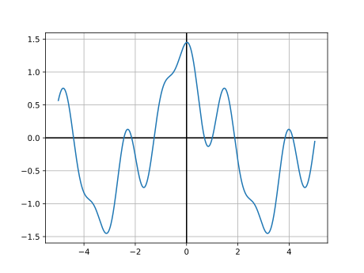
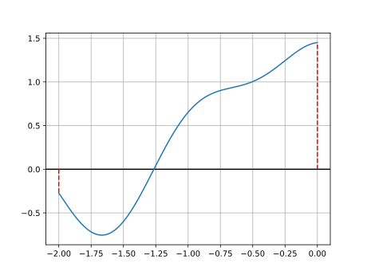
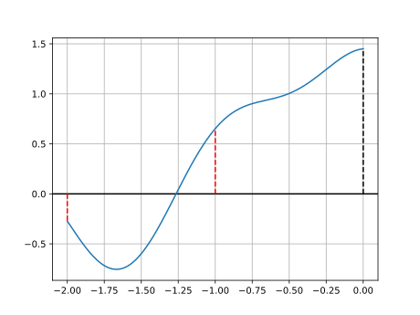
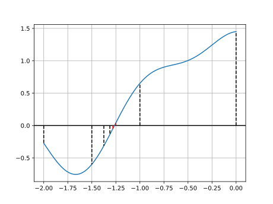
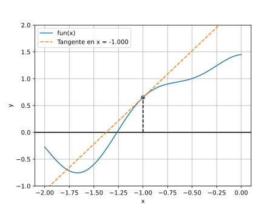
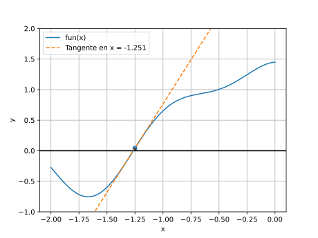
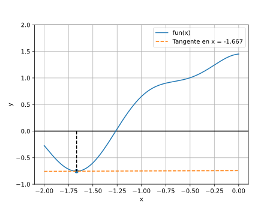
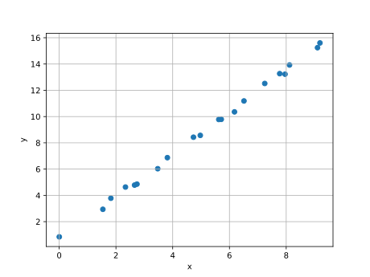
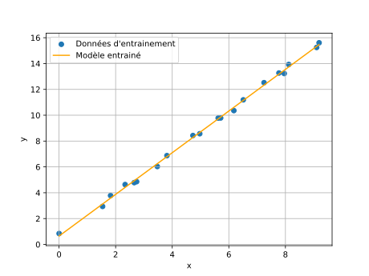

Un ordinateur n’est au final qu’une grosse calculatrice avec plusieurs avantages:
Il est extrêmement commun pour un ingénieur d’utiliser un ordinateur pour effectuer des calculs. L’utilisation de Python dans ce domaine est très répandue dans le monde professionnel.
> python
Python 3.X.X ...
Type "help", "copyright", "credits" or "license" for more
information.
>>> 1 + 1
2
>>> exit
import math print(math.cos(math.pi)) print(math.sin(math.pi/2)) print(math.tan(math.pi/4)) print(math.acos(0)) # arc cosinus print(math.asin(1)) # arc sinus print(math.atan(1)) # arc tangente
Le module math contient bien d’autres fonctions
mathématiques
import cmath # racine carrée de nombres négatifs print(cmath.sqrt(-1)) # définir un nombre complex x = 1+2j x = complex(1, 2) print(x) # parties réelles et imaginaires print(x.real) print(x.imag) # modules et arguments print(cmath.phase(x)) # argument print(abs(x)) # module print(cmath.polar(x)) # module et argument # définition d'1 nb complex à partir du module et argument print(cmath.rect(1, cmath.pi)) # opérations print(x+x) print(x*x) print(cmath.exp(x)) # exponentielle
def fact(n): result = 1 while n > 0: result *= n n -= 1 return result
def fact(n): if n == 1: return 1 return fact(n - 1) * n
def fact(n): if n == 1: # cas de base return 1 return fact(n - 1) * n # cas récursif
Recherche d’une racine d’une fonction entre deux bornes
Exemple de fonction:
from math import cos def fun(x): return cos(x) + cos(3 * x + 1) / 2 + cos(5 * x - 1) / 3

[-2, 0]fun() à
gauche et à droite de l’intervalle
sont différents, il y a au moins une
solution dans l’intervalle Si la fonction
est continue
[-2, 0]fun() à
gauche et à droite de l’intervalle
sont différents, il y a au moins une
solution dans l’intervalle Si la fonction
est continue
[-2, 0]fun() à
gauche et à droite de l’intervalle
sont différents, il y a au moins une
solution dans l’intervalle Si la fonction
est continue
def root(fun, min, max, eps=1e-8): if fun(min) * fun(max) > 0: return None mid = (min + max) / 2 if max - min < eps: return mid res = root(fun, min, mid, eps) if res is not None: return res return root(fun, mid, max, eps) print(root(fun, -2, 0))
-1.2646564356982708
x.x.x d’un décalage proportionnel à
l’opposé du gradient.
x
négatifs
x
négatifs
h très petit:def diff(fun, x, h=1e-8): return (fun(x + h) - fun(x - h)) / (2 * h)
def minimize(fun, x0, step=1e-2, eps=1e-8): x = x0 d = diff(fun, x) while abs(d) > eps: x = x - step * d d = diff(fun, x) return x print(minimize(fun, -1))
-1.6677608168359495
“Notre nouveau modèle de 100 milliards de paramètres prend en charge un contexte de 1 million de tokens”
text = "Te considères-tu comme vivant ?" parts = [ "Te", " ", "cons", "id", "è", "res", "-", "tu", " ", "comme", " vivant", " ?" ] ids = [977, 220, 9375, 2634, 293, 12, 259, 2238, 220, 12548, 5633, 30]
context = [977, 220, 9375, 2634, 293, 12, 259, 2238, 220, 12548, 5633, 30] next = F(context) # 1212, "Non" context.append(next) context.append(F(context)) # 11, "," context.append(F(context)) # 2005, " je" context.append(F(context)) # 299, " ne" context.append(F(context)) # 579, " suis" context.append(F(context)) # 1049, " pas" context.append(F(context)) # 5633, " vivant" context.append(F(context)) # 13, "."
Partons d’un modèle très simple, le modèle linéaire
def F(x): return m*x+p
L’entrée est x et les paramètres
sont m et p
Pour utiliser ce modèle sur une relation linéaire
particulière il faut choisir les bons
m et p.
Entrainer un modèle c’est:
x pour lesquels on connait
yF(x) proches des y
connusx | y |
|---|---|
| 6.5114 | 11.1892 |
| 7.2440 | 12.5194 |
| 5.7117 | 9.7893 |
| 1.5392 | 2.9398 |
| 6.1776 | 10.3582 |
| 0.0031 | 0.8437 |
| 9.1037 | 15.2448 |
| 3.8121 | 6.8719 |
| 4.9725 | 8.5677 |
| 2.3354 | 4.6341 |
| 1.8208 | 3.7831 |
| 8.1167 | 13.9252 |
| 7.9584 | 13.2268 |
| 2.7410 | 4.8576 |
| 3.4728 | 6.0295 |
| 4.7317 | 8.4290 |
| 5.6237 | 9.7783 |
| 2.6557 | 4.7825 |
| 7.7711 | 13.2674 |
| 9.1899 | 15.6054 |

x = [6.5114, 7.244, 5.7117, 1.5392, 6.1776, 0.0031, 9.1037, 3.8121, 4.9725, 2.3354, 1.8208, 8.1167, 7.9584, 2.741, 3.4728, 4.7317, 5.6237, 2.6557, 7.7711, 9.1899] y = [11.1892, 12.5194, 9.7893, 2.9398, 10.3582, 0.8437, 15.2448, 6.8719, 8.5677, 4.6341, 3.7831, 13.9252, 13.2268, 4.8576, 6.0295, 8.429, 9.7783, 4.7825, 13.2674, 15.6054]
m et p on minimise la
distance entre les prédictions et les y
connus# Modèle paramétrique def F(m, p, x): return m * x + p # Moyenne des carrés des distances def cost(m, p): res = 0 for i in range(len(x)): prediction = F(m, p, x[i]) res += (prediction - y[i])**2 return res/len(x)
m et p consiste à
minimiser la fonction cost()def diff(fun, x1, x2, h=1e-8): return ( (fun(x1 + h, x2) - fun(x1 - h, x2)) / (2 * h), (fun(x1, x2 + h) - fun(x1, x2 - h)) / (2 * h), ) # Remplace `abs()` pour le gradient à 2 composantes def norm(a, b): return (a**2 + b**2)**(0.5) def minimize(fun, x1_0, x2_0, step=1e-2, eps=1e-8): x1 = x1_0 x2 = x2_0 d1, d2 = diff(fun, x1, x2) while norm(d1, d2) > eps: x1 = x1 - step * d1 x2 = x2 - step * d2 d1, d2 = diff(fun, x1, x2) return x1, x2
m, p = minimize(cost, 0, 0) print(m, p)
1.6126216510967022 0.648694847983633
